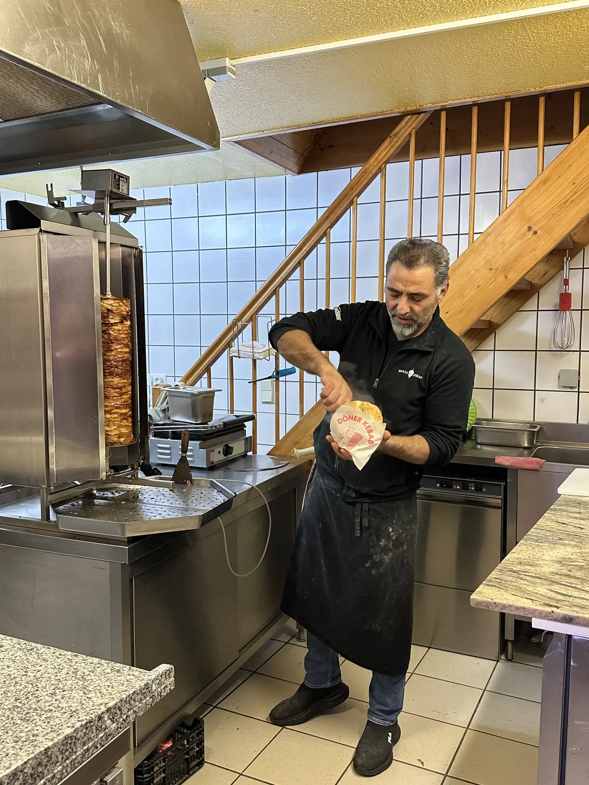
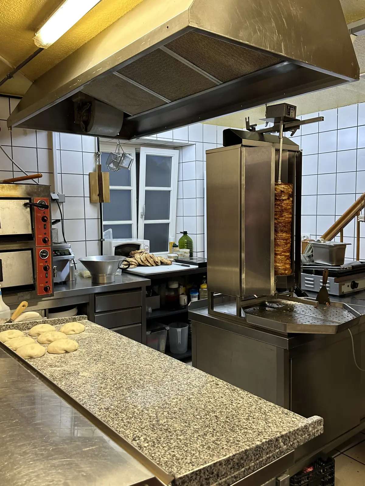

01 / DER ANFANG
Eine Idee.
Eine Idee.
Ein neuer Ort.
Ein neuer Standort und jede Menge Arbeit: Wir haben renoviert und eingerichtet, um einen Ort zu schaffen, an dem frisches Essen und eine familiäre Atmosphäre zusammenkommen.
DAS SIND WIR.
Ein familiärer Imbiss in Dinkelsbühl.
Mit viel Arbeit aufgebaut. Mit Herz weitergemacht.

ECHTE MENSCHEN. ECHTES HANDWERK.Weil gutes Essen Menschen zusammenbringt.
Und weil ein kleiner Laden viel Herz haben kann.
Ein neuer Standort und jede Menge Arbeit: Wir haben renoviert und eingerichtet, um einen Ort zu schaffen, an dem frisches Essen und eine familiäre Atmosphäre zusammenkommen.
Gerade war alles fertig, da kam ein Wasserschaden. Nach der vielen Arbeit war das ein harter Rückschlag. Trotzdem stand für uns fest: Wir machen weiter.
Heute stehen wir wieder für euch im Laden, bereiten zu und freuen uns über bekannte und neue Gesichter. Danke an alle, die uns auf diesem Weg unterstützt haben.
Die Speisekarte entdeckenMITTEN IN DINKELSBÜHL.

EIN ECHTER EINBLICK. UNSER LADEN.